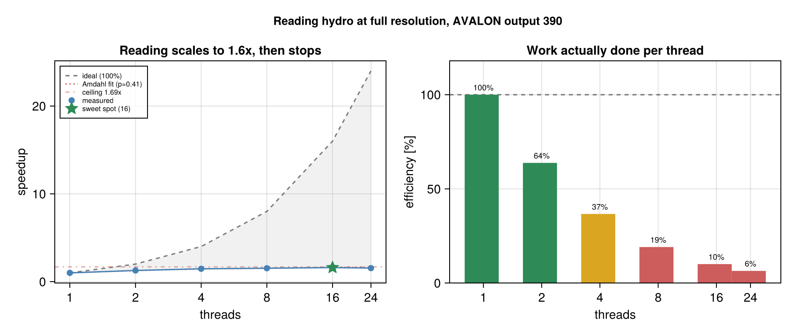
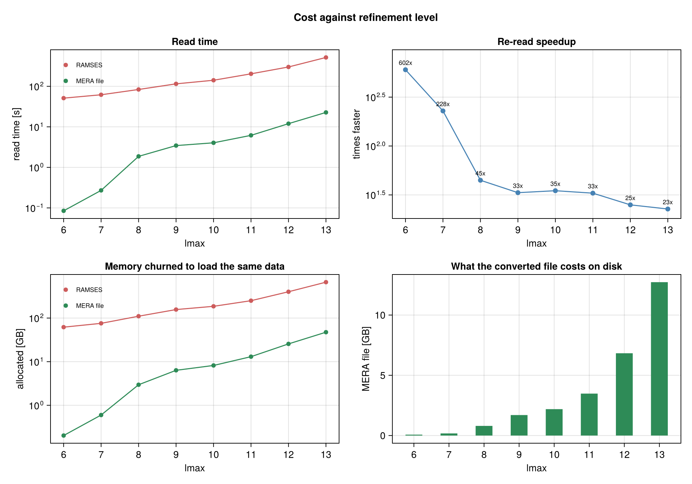

Performance
Two things dominate the time in simulation analysis: reading the data and projecting it. This page is the evidence for how Mera handles both, so you can judge it on numbers rather than adjectives.
To measure your own machine instead, go to Run Your Own Benchmarks.
Intel Xeon Gold 6534, 32 threads, 1511 GB RAM, btrfs, Julia 1.12.7, 24 compute and 24 GC threads.
The data is a production Milky-Way run from the AVALON simulation suite (Behrendt et al., in preparation), output 390: ncpu = 5120, 20489 files, 53.18 GB on disk, levelmax = 13, 5.9 pc finest cell. All three components converted. These are real research data at full resolution, not a synthetic case chosen to look good.
The raw reports are in the repository under benchmark_results/server_L13_output390, one directory per refinement level, so every figure quoted here can be checked against the run that produced it.
This is one simulation on one machine. A deeply refined run with 5120 CPU files on local storage. Its AMR structure, its file count and its filesystem all shape the numbers below, and a run built differently will not reproduce them. Ratios travel between machines better than absolute times do, but neither travels unconditionally, so see Where this may not hold before carrying anything here to your own setup.
Every number below is produced by a function you can run on your own data.
Disk: a MERA file is 76% smaller on this simulation
The most checkable claim first, because it needs no timing and no special hardware. One du reproduces it.
| output 390, all components | RAMSES | MERA .jld2 | |
|---|---|---|---|
| size on disk | 53.18 GB | 12.73 GB | 76% smaller, 4.2x |
Hydro, gravity and particles on both sides, plus the AMR files the RAMSES side needs to describe its grid. The snapshot splits as hydro 24.94 GB (47%), gravity 17.52 GB (33%), AMR 10.66 GB (20%) and particles 65 MB (0.1%).
Where the saving comes from, and why it is simulation specific
It is not mainly compression. Two separate things are happening, and only one of them is:
- A MERA file stores only leaf cells. RAMSES output holds the whole AMR hierarchy, every internal grid of the tree as well as the cells you analyse. Mera keeps a cell only where it is not refined further, so the internal levels are never written.
- What remains is LZ4 compressed.
Measured separately on a small public fixture, by saving once with compress=false and once normally:
| size | ||
|---|---|---|
| RAMSES, hydro + AMR | 1.6 MB | |
| MERA, uncompressed | 625.6 KB | leaf cells only, 61% of the reduction |
| MERA, LZ4 | 295.7 KB | compression adds the rest |
So the larger share comes from not storing the tree, and that share depends entirely on the AMR structure. A deeply refined run carries many internal grids and loses a lot by dropping them; a shallow or nearly uniform run carries few and would save much less. The 76% above is a property of this simulation as much as of the format.
Check yours the same way:
gas = gethydro(getinfo(output, path))
savedata(gas, "/tmp/raw", :write, compress=false) # leaf cells, no compression
savedata(gas, "/tmp/lz4", :write) # and compressedThe two effects also explain why the read is fast: a MERA file has less to read and less to reconstruct, because there is no hierarchy to walk.
Projection: threads only pay when there is work per cell
A published null result, because it is the one most people get wrong.
| workload | 1 thread | 2 | 4 | 8 | speedup |
|---|---|---|---|---|---|
one variable, :sd | 1.56 s | 1.62 s | 1.58 s | 1.62 s | 0.96x, flat |
| ten variables, one call | 21.0 s | 13.3 s | 13.3 s | 12.9 s | 1.63x |
Live-heap delta about 1.1 GiB.
benchmark_projection_hydro(gas, [1,2,4,8], 3), session started with 8 Julia threads.
Giving a single light projection more threads does nothing. There is too little arithmetic per cell to cover the coordination cost, so it stays flat at every thread count. Once there is real work per cell the picture changes, but note where the gain appears: almost all of it arrives between 1 and 2 threads, then it flattens. Two threads captures nearly all of what is available here.
The practical consequence is one line:
proj = projection(gas, [:sd, :T, :vx, :vy]) # one pass over the data, threads usedReading: convert once, then re-read far faster
savedata writes a MERA file holding the already-parsed table. Reading a RAMSES output re-parses every per-CPU Fortran file and rebuilds the AMR tree, every single time.
Same snapshot, same three components, same data in memory at the end:
| getting hydro + gravity + particles into memory | time |
|---|---|
| from the RAMSES output, 16 threads | 514.9 s |
| from the MERA file, warm | 22.7 s |
So about 23x faster, and the conversion pays for itself after 1.1 re-reads: writing the file cost 27.6 s on top of one read it had to do anyway.
Memory is the larger effect, and the one that decides whether a read fits at all:
| RAMSES | MERA file | ||
|---|---|---|---|
| allocated getting there | 665.4 GB | 47.4 GB | 14x less churn |
| peak resident memory | 115.2 GB | 60.2 GB | 1.9x lower |
| garbage collection | 61.8 s | 1.6 s |
Both paths finish holding the same data. The difference is what they churn through on the way: RAMSES parsing needs buffers for every one of 20489 files, so it allocates 665 GB to deliver a 53 GB snapshot and spends a minute collecting the result. That allocation, not the data, is what presses a read against a node's memory limit.
Threading helps reading, but only so far

Reading gains 1.61x from 1 to 16 threads and then turns over: 24 threads is slower than 16. Fitting Amdahl's law to the rising part gives a parallel fraction of 0.41, so about 420 s of the 710 s single-thread read is irreducibly serial and no thread count can beat 1.69x. Sixteen threads already reaches 95% of that ceiling.
The efficiency panel is the same fact stated usefully: by 16 threads each thread is doing 10% of the work a single thread does.
16 threads is the fastest, and probably not the one to use
The curve is flat enough that the fastest point is poor value:
| threads | time | share of best | cores |
|---|---|---|---|
| 4 | 484.0 s | 91% | 4 |
| 8 | 464.7 s | 95% | 8 |
| 16 | 442.1 s | 100% | 16 |
Going from 4 to 16 threads costs four times the cores for 9% more speed, and 8 to 16 costs twice the cores for 5%. Four threads already reach 91% of the best time.
Mera reports both points for this reason. sweet_spot is the smallest count within 5% of the fastest, economical the smallest within 10%. On a flat curve the 5% band is close to arbitrary: here 8 threads missed it by half a second, which is what pushed the answer to 16.
Prefer the economical point whenever the machine is shared or other snapshots are waiting, because the next section shows those spare cores are worth considerably more elsewhere.
How much threading helps depends on how much you read, and it is worth knowing which regime you are in:
lmax | 1 thread | best | speedup |
|---|---|---|---|
| 6 | 128.9 s | 23.2 s | 5.55x |
| 8 | 204.4 s | 53.2 s | 3.84x |
| 10 | 297.3 s | 92.3 s | 3.22x |
| 12 | 502.6 s | 240.4 s | 2.09x |
| 13 | 709.6 s | 442.1 s | 1.61x |
Why it degrades: on this machine, reading is allocation bound
Garbage collection is not the explanation. Its share of the read falls from 29% at level 6 to 12% at level 13, the opposite of what would be needed.
The measurement that does explain it is this. Across all eight levels, a tenfold range of data volume, read time tracks bytes allocated almost exactly:
- 1.30 GB/s sustained, with the rate never leaving 1.21 to 1.36 GB/s
- R² = 0.9985 for read time against bytes allocated
So on this machine a RAMSES read costs what it costs to allocate, and that rate does not improve when you add threads. The relationship is tight enough to be a real property of the reader rather than a coincidence, but it was measured on local storage, where I/O is cheap. See the caveats below before carrying it to a networked filesystem. At low lmax there is little to allocate and the per-file parsing work, which does parallelise, dominates, so threading pays. At full resolution the 665 GB of allocation dominates, and threads cannot make the allocator go faster.
The consequence: run one process per snapshot
If the ceiling is per-process, then separate processes should each get their own share. Measured, reading two outputs at lmax=11 with a budget of 16 threads:
| wall time | aggregate allocation rate | |
|---|---|---|
| one at a time, 16 threads each | 303.1 s | 1.65 GB/s |
| two at once, 8 threads each | 177.4 s | 2.82 GB/s |
1.71x faster, and the aggregate allocation rate rose by the same factor, which is the signature of a per-process limit rather than a machine-wide one. Halving the threads given to each output while also sharing the machine cost only 14% per output.
Put beside the thread sweep, this is the point: the entire 1 to 16 thread sweep on one read gained 1.61x. Running two snapshots at once gained 1.71x, with half the threads each. For multi-snapshot work, processes are the axis that pays, not threads.
# better than one process with all the threads
@sync for out in outputs
Threads.@spawn run(`julia -t 8 --project=. analyse.jl $out`)
endTwo caveats. This is two data points at one refinement level, so it shows the effect exists but not where it saturates. And N concurrent reads need N times the peak resident memory, 115 GB each at full resolution here, so the thread budget stops being the binding constraint and RAM starts.
Where this may not hold
Everything above is one simulation on one machine, and three of its properties are doing real work in the result. Check yours before assuming the conclusion transfers.
File count. This snapshot has ncpu = 5120 and 20489 files. Per-file parsing is a large share of the read, and it is the part that parallelises. A run with ncpu in the tens has far less of it, so the balance between parsing and allocation shifts and the thread sweep will look different.
The AMR structure. How much data sits at each level decides how the cost divides between walking the hierarchy and allocating cells. A shallower or more uniformly refined run will not give the same curve across lmax.
The filesystem, and this is the one most likely to flip the answer. These measurements are on local btrfs, where reading is allocation bound rather than I/O bound. On Lustre, GPFS or NFS, thousands of file opens become round trips to a shared metadata server, and I/O can dominate instead. If it does, running several processes at once may hurt rather than help, because they contend for the same metadata service. The allocation ceiling is a property of Julia; the I/O ceiling is a property of your storage, and which one binds first is a question about your machine.
Measure before adopting the pattern. The script is benchmark_results/parallel_outputs.jl, and it takes a few minutes.
The practical consequence: at full resolution, the way to read faster is to allocate less or to run more processes, not to add threads to one read. Reading a subregion or a capped lmax reduces allocation directly, which is why those reads are so much cheaper, and it is the same reason a MERA file is fast: it allocates a fourteenth of what parsing does.
Where the RAMSES time goes:
| component | time |
|---|---|
| hydro | 448.0 s ± 7.0 s |
| gravity | 80.5 s ± 23.6 s |
| particles | 3.6 s ± 1.3 s |
| total | 532.0 s |
benchmark_report(path, 390; runs=3) at lmax=13, 16 threads, the sweet spot its own sweep found. Gravity's spread is large because it is the component most exposed to other load on a shared node.
This gap grows on a server, it does not shrink. The cost Mera avoids is opening and parsing 20489 files. On a parallel filesystem such as Lustre or GPFS, every one of those opens is a round trip to a metadata server shared with every other user on the machine. The measurement above is on local btrfs, so treat its ratio as a floor rather than a ceiling.
The speedup depends on how much you ask for
One number would be misleading. Measured across every refinement level of the same snapshot:
lmax | RAMSES read | MERA re-read | speedup | MERA file |
|---|---|---|---|---|
| 6 | 51.1 s | 0.09 s | 602x | 74.7 MB |
| 8 | 83.5 s | 1.87 s | 45x | 819 MB |
| 10 | 141.0 s | 4.04 s | 35x | 2.19 GB |
| 12 | 299.8 s | 11.98 s | 25x | 6.83 GB |
| 13 | 514.9 s | 22.69 s | 23x | 12.73 GB |

The mechanism is visible in the shape rather than in the numbers. RAMSES read cost is dominated by parsing every one of the 20489 files whatever you asked for, so its curve is nearly flat across eight levels. The MERA path reads only what was requested, so its curve falls by more than two orders of magnitude. The ratio between them is the gap between those two lines, which is why it grows as the request narrows.
Which number applies to you depends on what you read. Full resolution is the case a published result rests on, and there the honest figure is 23x. A reduced lmax is a preview, or a region that is genuinely coarse anyway, and the very large numbers there are real but describe that use.
When converting pays, and when it does not
The measurement above is deliberately the worst case for the MERA format's advantage to be judged against: the whole box, every level, which is the most expensive thing you can ask RAMSES for. It is a ceiling on cost, not a typical workload, and whether it describes yours depends on how you read.
Full resolution is the normal case for a result you intend to publish. The refinement is where the physics is, so an analysis of a galaxy needs the levels that resolve it. Reading at a reduced lmax is for a quick look, or for regions that are genuinely coarse anyway, the low-density gas outside the galaxy in the run measured here.
RAMSES can read part of a box; a MERA file is read whole. RAMSES output is decomposed along a Hilbert curve, so asking gethydro for a subregion opens only the CPU files whose domains intersect it and never touches the rest. A MERA file holds one table: loaddata accepts xrange and friends, but it reads everything stored and then cuts in memory, and it has no lmax option.
That sounds like a limitation, and it stops being one as soon as you stop thinking of a MERA file as a copy of the snapshot. Make the file be the selection. Use the RAMSES partial read once, for exactly the data you keep coming back to, and save that:
# read once, cheaply: only the CPU files intersecting this region are opened
gas = gethydro(getinfo(250, "/path/to/sim"),
xrange=[-10, 10], yrange=[-10, 10], zrange=[-2, 2],
center=[:bc], range_unit=:kpc, lmax=11)
savedata(gas, "/scratch/merafiles", :write) # a MERA file of just that selection
# from now on, every pass over that data is the fast path
gas = loaddata(250, "/scratch/merafiles", :hydro)The two properties now work together rather than against each other: the partial read keeps the one-off cost down, and the MERA file is small because it contains nothing you did not ask for. "Loaded whole" is exactly what you want when the whole file is your region of interest.
Nothing stops you keeping several of them, one per region, resolution or component, and they are cheap to hold: the selection above is a fraction of the full-box file.
So the decision is about your access pattern, not about which format is faster:
| how you read | what to do |
|---|---|
| the whole box, or most of it, more than once | convert. This is what the numbers above measure |
| the same subregion many times | save that subregion as its own MERA file, as above |
| scattered small subregions of a large box, each once | RAMSES partial reads are competitive: they skip most files entirely |
| one pass over a snapshot you will not revisit | do not convert; you would pay the write for nothing |
The middle two rows are where most iterative analysis actually lives, and they are the ones worth setting up deliberately.
If you read the same data more than once, convert it.
Honest limits
- One machine, one simulation, one Julia version.
- The read comparison uses a 640-CPU snapshot. On a small output, the per-file parse cost that the MERA format avoids is a much smaller share of the total, so the advantage is smaller. It is a property of the file count, not a constant.
- The public test simulations cannot reproduce the read comparison. Every one of them is
ncpu = 8with 34 to 48 files per output, so the effect being measured is essentially absent. They can show that the harness works and that the disk ratio holds. - Projection scaling was measured at one resolution. Locating the crossover precisely would need a resolution by thread-count sweep.
- Peak RSS and Julia live-heap deltas measure different things. RSS covers the whole process including the loaded dataset; the live-heap delta covers only what the operation itself adds. They are reported separately and never mixed.
- A MERA file is read whole.
loaddatatakes a spatial range, but it reads the stored table and then cuts, so a small subregion of a large MERA file costs what the whole file costs. The practical answer is to save the selection as its own file rather than to carve one out of a full-box file; reading part of a large MERA file directly is a real gap.
Next
- Run Your Own Benchmarks, including what to do differently on a server
- Multi-threading, for the thread budget